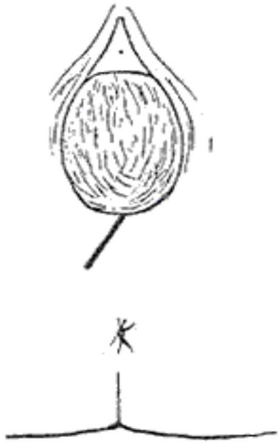
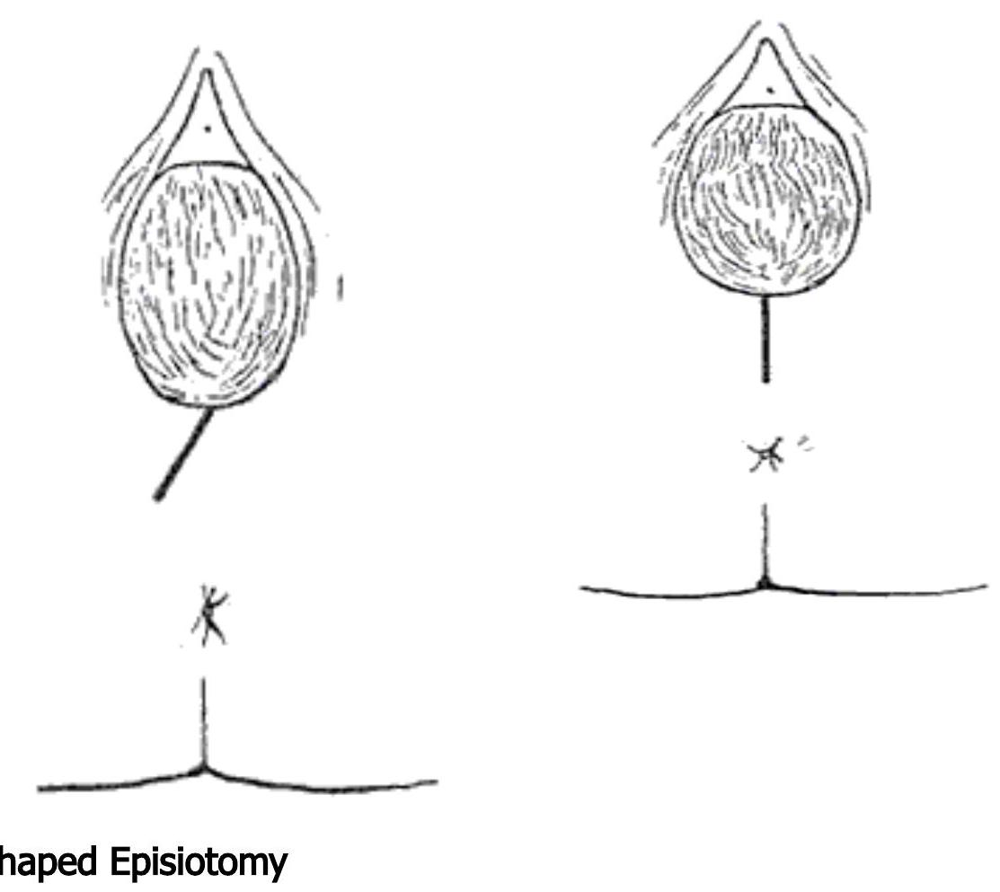
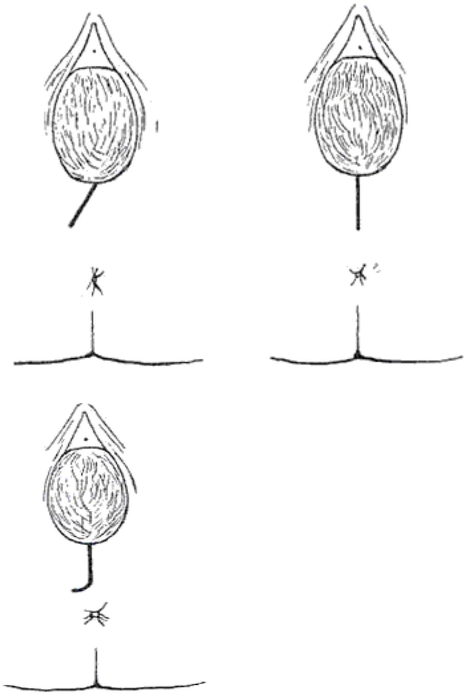
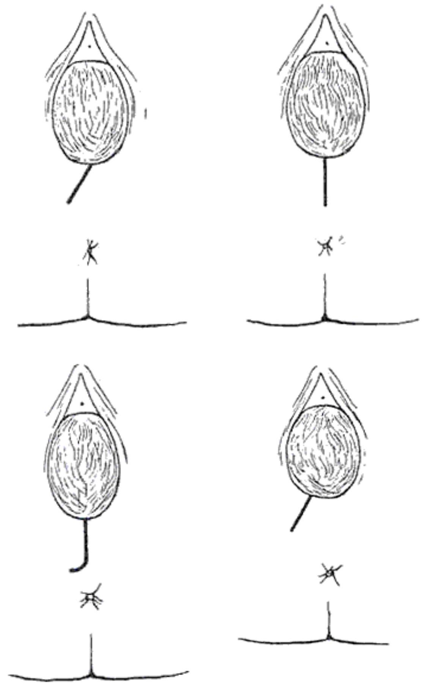
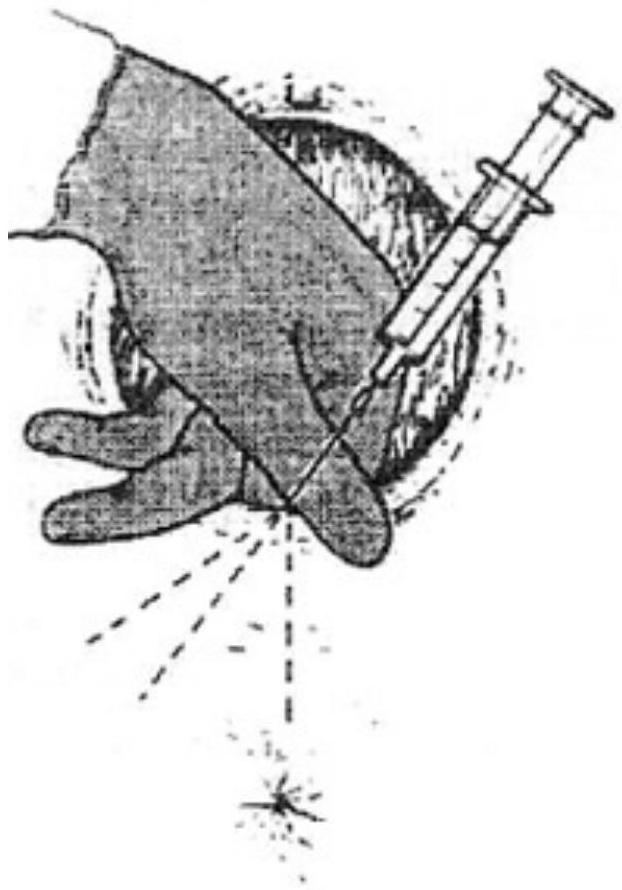
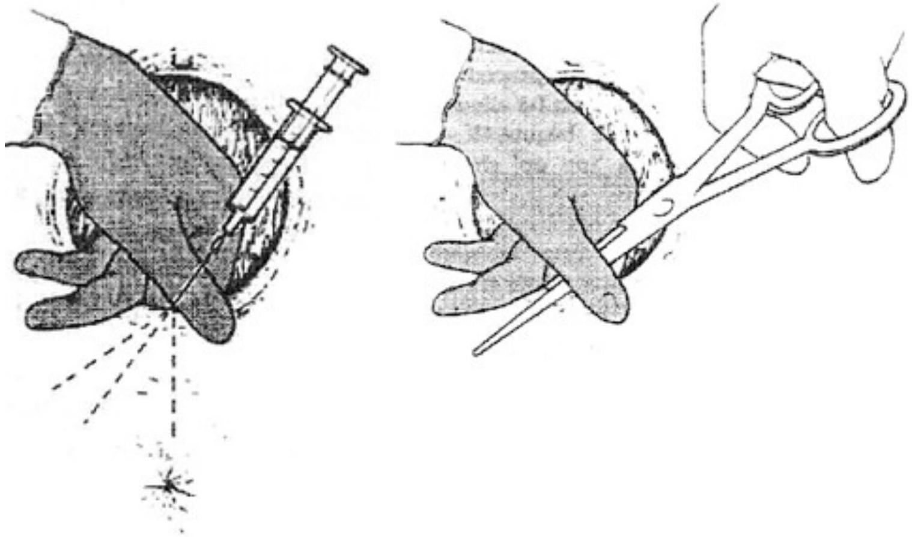
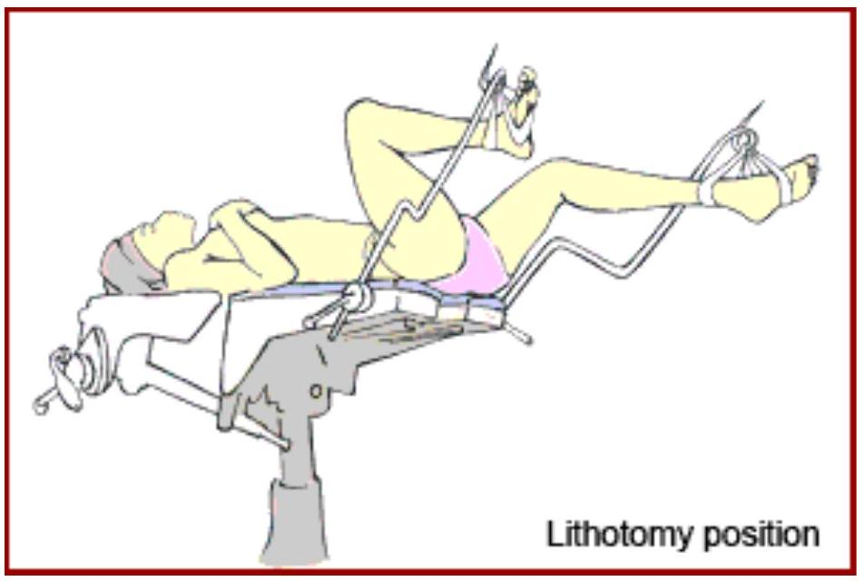
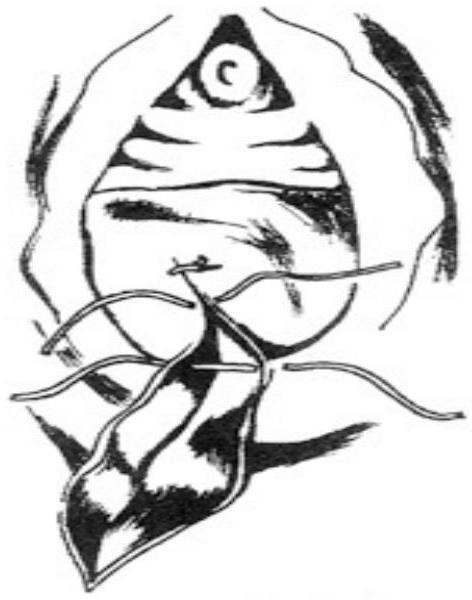
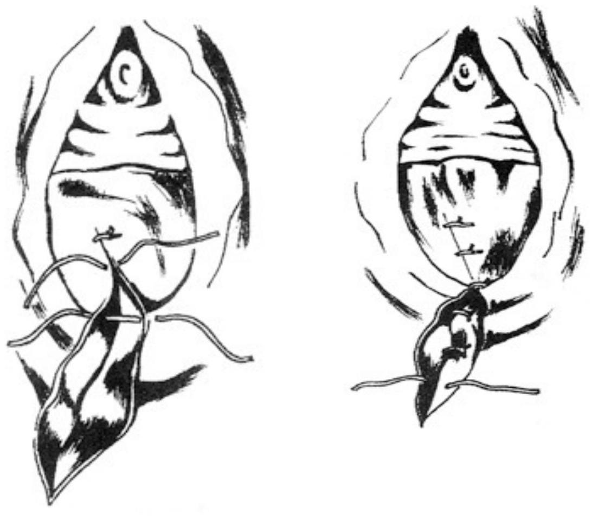
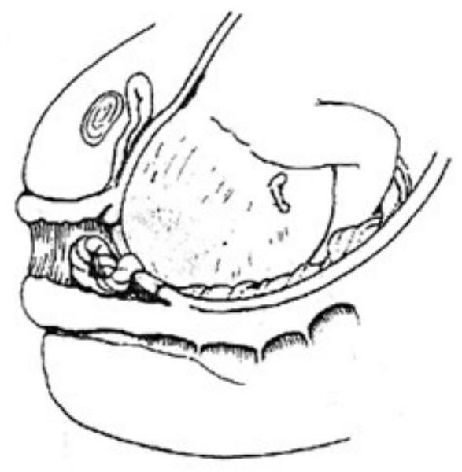

This is the most commonly performed episiotomy due to its safety record. However, it is difficult to repair. It begins at the centre of the fourchette, directed posteriorly and laterally the incision is not more than 3 cm at $45^{\circ}$ to the midline. Move towards a point midway between ischio-tuberosity and the anus. This is to avoid damaging the anal sphincter and the Bartholin's glands.
SECTION 5: OBSTETRIC ANAESTHESIA, OPERATIONS AND EMERGENCIES
Introduction
You are now in the fifth section of this unit on labour. In the previous section you learnt that abnormal labour presents special challenges and carries many risks. This is why you should refer such women to the doctor in the prenatal clinic during their third trimester. They should also be advised to deliver in the hospital, as they may need a caesarean section.
In this section, you will study obstetric anaesthesia, operations and emergencies.
Objectives
By the end of this section you will be able to:
- Describe obstetric anaesthesia
- Describe the management of obstetric operations
- Describe the management of obstetric emergencies
Obstetric Anaesthesia
By the end of this topic you will be able to:
- Differentiate between anaesthesia and analgesia
- Describe the risks associated with anaesthesia with particular emphasis on how to prevent these risks
- Describe the role of a midwife in the administration of anaesthesia
Anaesthesia means absence of sensation and freedom from pain. General anaesthesia is the induction of unconsciousness, which may also involve the giving of some analgesia.
Regional anaesthesia is when a group of nerves is made free of sensation. Local anaesthesia is when a specific area of the body is anaesthetised e.g. the perineal area when repairing an episiotomy perineal or vaginal tear.
Each of these three categories of anaesthesia will be covered in this topic.
General Anaesthesia
It is essential that only trained anaesthesia personnel administer general anaesthesia to patients. Moreover, it is essential to place an endotracheal tube in all pregnant patients undergoing general anaesthesia, since the risk of aspiration pneumonitis, secondary to the inhalation of gastric content, is a significant one.
Until the baby is born, the mother should receive 100% oxygen and a low concentration of an inhalation agent such as isoflurane 0.5%. After delivery anaesthesia can be deepened by supplementing the anaesthetic with higher concentrations of potent volatile inhalation agents. Factors connected with anaesthesia have been a significant cause of maternal deaths until very recently. It is essential for the midwife to be aware of the risks associated with anaesthesia and why they occur, so as to give intelligent help to assist the operating team and the patient.
Problems in Obstetrics Anaesthesia
In obstetrics the anaesthetic problems are due to:
- Effects of progesterone on the mother
- The pressure from the gravid uterus
- The presence of two patients rather than one patient
Some of the problems include; Mendelson's syndrome, failed intubation, aortalcaval occlusion and maternal awareness.
Mendelson's Syndrome
It is believed that in pregnancy and especially in advanced labour there is a delay in gastric emptying time, due to the effect of progesterone on the gastro-intestinal tract.
Narcotic analgesics like pethidine that are given in labour, cause significant delay in gastric emptying. The static stomach content raises the pH . Fasting also gives similar reactions. The pressure from the gravid uterus results in the reflux of the contents in the stomach when the mother is in recumbent position. When she is under general anaesthetic unnoticed regurgitation may occur. In cases where the acid stomach contents are aspirated into the lungs, a condition known as Mendelson's Syndrome result. The alveoli are damaged which causes the impairment of gaseous exchange. It is impossible to oxygenate the mother and in severe cases death may ensue.
Prevention of Mendelson's Syndrome
The main method of prevention is the administration of antacid therapy while in labour to high risk patients.
Rapid Sequence Induction
Rapid sequence induction is used for unprepared patients. Prepared obstetric patients are also liable to have acid contents in the stomach and the same technique is used. The method always includes endo-tracheal intubation with the use of cricoid pressure, which protects the lungs even when silent regurgitation occurs.
Cricoid Pressure
The cricoid cartilage is pressurised to close the oesophagus, preventing acid reflux. This pressure is essential in preventing the death of the mother. Proper application of cricoid pressure is essential. When intubation fails and the anaesthetist is able to maintain a clear airway, a facemask should be used while the assistant maintains cricoid pressure. Another option is spinal anaesthesia, after waking the mother.
Failed Intubation
This usually occurs in pregnant women with laryngeal oedema due to pregnancy and induced hypertension. The anaesthetist has difficulties visualising the vocal cords and introducing the tracheal tube. Other factors include poor opening of the mouth and a stiff or fat neck.
Prevention
Use a pre-oxygenation technique, which involves giving facemask oxygen for four minutes uninterrupted. This will prevent cyanosis significantly when attempting to intubate.
Aortocaval occlusion
You will now look at aortocaval occlusion and its prevention. The cause of aortocaval occlusion is the weight of the gravid uterus, which partially blocks the inferior vena cava. The venous return is then reduced, which in turn leads to a fall of cardiac output. This occurs when a pregnant woman lies supine in late pregnancy for a long period in labour. If an emergency caesarean section is being performed due to foetal distress, aortocaval occlusion increases the foetal distress and causes further foetal hypoxia.
Do you know how this might be prevented?
This condition can be prevented by encouraging the mother in labour to remain in an upright position for as long as possible. During labour, when the woman needs to lie flat, the midwife should ensure she is tilted to the left, either with a small rubber wedge under the mattress or a folded blanket under the left buttock at an angle of $15^{\circ}$. Modern delivery beds, chairs and operation tables have this facility incorporated.
Regional Anaesthesia
The operational region is made free from pain by infiltrating an anaesthetic drug into the nerves supplying the region. This can be achieved in several ways i.e. epidural block, spinal anaesthesia, pudendal block and para cervical block.
Epidural Block
Epidural analgesia is described as lumbar or caudal, depending on the site used when approaching the epidural space. This is achieved by infiltrating anaesthetic into the epidural space so that it surrounds the fibres of the specific spinal nerves and anaesthetises them, thereby achieving a selective block. This can be done in two ways:
Lumbar Epidural Block
This is the most common approach and there are three different techniques which may be used. The anaesthetic is introduced between lumbar vertebrae two and three, or three and four.
First technique
A single shot epidural refers to the process whereby local anaesthesia is introduced using a Touhy needle, but no catheter is inserted for topping up purposes.
Second technique
Intermittent technique is when a polyethylene or nylon catheter is inserted into the epidural space so that further doses of local anaesthetic may be given when required.
Third technique
The continuous technique is where anaesthetic solution is infused via epidural catheter using an intravenous infusion line attached to an electronic drip counter.
Caudal Epidural Block
This is an uncommon technique. The epidural needle is introduced between the sacral vertebra and cocyxiatus through the sacral hiatus.
Contraindications for caudal epidural block
- Maternal reluctance
- Bleeding disorders
- Systemic or site infection
- Existing disease, for example, multiple blood vessels sclerosis
You will now look at some of the indications of epidural analgesia. These include:
Indications of epidural analgesia
- Request of the mother
- Malposition where long, exhausting labour is anticipated
- Malpresentation, particularly breech presentation, where an obstetrician requires a well relaxed mother to perform an assisted breech delivery
- Multiple pregnancy where an epidural analgesia is advantageous because it allows for the possibility of manipulative delivery
- When the mother is not obtaining adequate pain relief from other analgesic methods and is tense and distressed
There are several complications, which may arise from the use of anaesthetics. You will now study each of these in turn.
Complications of Regional Anaesthesia
Hypotension
This occurs as a result of the effect of vasodilatation of the blood vessels. Rapid intravenous infusion can prevent the condition. This is commonly known as a preload and commonly consists of between 500 ml and 1000 ml of Hartman's solution. A functional intravenous infusion is essential before epidural analgesia is commenced in order to prevent hypotension.
Dural Tap
This is the accidental puncture of the durameter. This is recognised when a few drops of Cerebrospinal Fluid (CSF) seep through the Tuohy needle. In order to prevent this condition, the anaesthetist normally re-sites the epidural catheter in an adjacent space. The obstetrician is informed and a forceps delivery will be planned in order to prevent the woman from pushing and possibly forcing more CSF through the dural puncture.
A reduction of CSF volume usually results in severe headache, which resolves spontaneously within a week. Another measure to minimise leakage of CSF is to leave the epidural catheter in position and infuse normal saline with the help of an infusion pump. This is normally continued for 24 hours while the woman is lying flat.
For quick relief of the headache, the anaesthetist may decide to perform a 'blood patch', that is under strict asepsis taking between $10 \mathrm{ml}-20 \mathrm{ml}$ of venous blood from the woman's antecubital vein and introducing it into the epidural space via the intervertebral space nearest the dural puncture. This results in immediate cure of the headache. The woman is left to rest for an hour or two to avoid disturbing the clot, which has sealed the dural puncture. It carries risks of infection but the success rate is 90% on the first occasion and 98% if the procedure is repeated.
Total Spinal Block
This is a rare complication. It occurs when by mistake there is a dural puncture that fails to be recognised and the anaesthetist injects the local anaesthetic solution. This results in rapid motor and sensory block with a drastic fall of blood pressure. The mother collapses and cardiac arrest may follow. If this happens, immediate resuscitation is essential and ventilator support is required.
Occasionally, this effect is seen following a later top up and not during the initial stages of epidural analgesics. The reason for this is unclear but, in some cases, the epidural catheter is thought to have migrated. The midwife who tops up an epidural must be aware of these possible complications and their immediate treatment.
Bloody Tap
This happens when the anaesthetist punctures one of the epidural veins. Blood is seen in the catheter. In this case the epidural catheter is re-sited in order to prevent intravenous injection of local anaesthetic solution. If local anaesthetic is injected in the vein, toxicity will result and the woman will complain of tingling or numbness of the mouth and tongue, and dizziness. Her speech may be slurred and she may finally have convulsions.
Patchy Block
This is when an epidural block is sometimes more effective on one side of the body or is completely unilateral for no obvious reason. If this occurs the anaesthetist should be informed to adjust the epidural catheter.
Disadvantages of Local Anaesthesia
There are several disadvantages of local anaesthetics. These include:
- Unpleasant experience to the woman who may lose sensation and motor function in her legs
- Being unable to pass urine due to unawareness of a full bladder
The epidural block may also contribute to the following symptoms in the postnatal period:
- Impaired bladder function
- Marked perineal pain
- Backache due to trauma by the Tuohy needle during the epidural procedure
Drugs Used in Epidural Analgesia
There are several drugs used in epidural analgesia. These are:
Bupivacaine
This is administered in strengths of 0.25% and 0.5% and these concentrations are modified as required by diluting with normal saline. It is effective within 10-20 minutes of administration and lasts for about two hours during labour. The total dose given is not excessive unless labour is prolonged and toxicity is not common.
Ropivacain (Naropin)
This analgesic is good in low concentration with minimal and non-progressive motor block. Its long acting action makes it suitable for use in labour.
Opiates
Drugs in this group include:
- Diamorphine
- Morphine
- Pethidine
These are good post operative analgesics and neither cause hypotension, nor cause motor or sympathetic block. They are not as effective as might be expected in relieving labour pains but are commonly used in our hospitals following caesarean sections due to the pleasant feeling of wellbeing they induce. There is some risk of respiratory depression, although this risk is minimal.
Lignocaine
This is usually administered in the strength of 0.5-1% and is one of the more effective local anaesthetics available for epidural administration. The short acting span makes it unsuitable for use through out labour since a large dose may be needed and toxicity is therefore a risk. If the woman is very distressed it may be used for the initial dose and Bupivacaine can be used thereafter.
Spinal Anaesthesia
Although spinal anaesthesia provides for pain relief at the time of delivery, it is not suitable for use during labour as it decreases the strength of the labour contractions. It is suitable for caesarean section provided the operation is not prolonged beyond the effective time of the anaesthetic solution in use.
A spinal block is performed in a manner similar to an epidural block but in this case a local anaesthestic solution is injected into the sub-arachnoid space, i.e. in to the cerebrospinal fluid.The woman will have total motor control and sensory block over and below the anaesthetised areas.
There is a greater risk of hypotension with spinal than with epidural block. Blood pressure should be monitored carefully as should the the bladder contents.
Pudendal Block
This is a technique that is used to anaesthetise areas that are supplied by pudendal nerve, namely lower vargina, perineum and vulva. This method is very unreliable and does not give adequate analgesia.
Para Cervical Block
In this technique the para cervical plexus is blocked, this gives pain relief for the first stage of labour but each injection is only effective for about three hours.
The technique is not favourable since the uterine artery passes close to the nerve plexus and inadvertent intra-arterial injection of even a small amount of anaesthesia would lead to foetal bradycardia or intrauterine death.
Local Anaesthesia
Perineal infiltration is very common among midwives who perform it before repairing episiotomies, perineal tears or vaginal tears. Lignocain is commonly used, but there is need for caution as levels above 200 ml of 1% solution leads to risk of toxicity.
The midwife should really minimise the risk of intravenous injection, by being observant of the presence of blood in the solution after withdrawing the piston prior to injection.
Inhalation Anaesthesia
This is a process by which you administer volatile agents using a facemask in pain relief. It is indicated in the late first stage and during the second stage of labour.
Explain the procedure to the mother to ensure her cooperation. You should let her know that it will relieve the pain. Tell her to breathe in during a contraction and rest during the time the contraction wears off. She has to breathe in for at least 15 to 35 seconds at the beginning of a contraction.
It is contra-indicated under the following circumstances:
- Antepartum haemorrhage
- Preeclampsia
- Anaemia
- Congestive cardiac failure
- In all cases with placental insufficiency
- Maternal and foetal distress
- Intra uterine growth retardation
What are the main advantages of inhalation anaesthesia?
- It is easy to use
- It can be used by any competent midwife without supervision so long as she knows how to regulate the flow
- Inhalation anaesthesia has shortlived effect on pain relief with no complications to the baby
There are two types of inhalation anaesthesia. These are called:
Tritene
This has a composition of upto 0.5% of tritene in air. It is blue in colour and a volatile agent. One of the main side effects of this drug is that it accumulates in the maternal blood stream causing sleep but also, at times, disorientation. When this happens you must stop the inhalation. It also accumulates in the foetus, causing drowsiness at birth. It should not be administered for more than four hours. Once the drug is stopped the effect is short lived.
Entonox
This drug is composed of 50% nitrous oxide and 50% oxygen. When used in high concentration it is suitable for anaesthesia.
It has no side effects.
Responsibilities of the Midwife
The main responsibilities of the midwife include:
- Preparing equipment and ensuring it is in good working order
- Staying with the patient so as to instruct her on how to use the inhalation apparatus
- The midwife should know how the apparatus is used
Obstetric Operations
You will now study obstetric operations. The easiest and most important operation is the episiotomy. This is a technique each midwife should master while in the labour ward. This competence is achieved through observing an experienced midwife conducting the procedure. It is an aseptic procedure.
Episiotomy is invasion through the perineal tissues, which is designed to enlarge the vulva outlet during delivery.
The main indications of an episiotomy are:
- Rigid perineum, mostly in primigravidae
- Poor maternal effort or maternal distress in second stage
- In case of foetal distress in second stage to hasten delivery
- When the perineum threatens to tear, for example, in persistent occipito posterior
- Prior to assisted delivery such as in low forceps or vacuum delivery
- Preeclamptic mother
- In mothers who have medical conditions such as cardiac disease or diabetes mellitus
- In premature labour to minimise the risks of intracranial injury to the baby
- In case the mother has had previous third degree tears which had been repaired
- In malpresentation like breech delivery to prevent risks of intracranial injury to the baby
There are several types of episiotomy incisions.
Mediolateral Episiotomy

Median Episiotomy
This begins at the fourchette, is directed posteriorly for approximately 2.5 cms and stops just before the anal sphincter. It follows the insertion of perennial muscles and has minimal bleeding due to few blood vessels in this area. It is easy to repair, less painful and rarely causes dypareunia. However there is the danger of the incision extending to the anal sphincter.
The incision begins at the centre of the fourchette, is directed posterior for about 2 cm and then it is extended latero-posteriorly to avoid damage to the anal sphincter. Suturing of this episiotomy is very difficult.
Lateral
Not used now. Unlike in all the other types, the incision does not begin at the centre of the fouchette but on the side of the vaginal opening. The incision may extend leading to a severe vaginal tear and excessive bleeding.
Performing an Episiotomy
The timing of the incision is very important. It is best timed when the presenting part is directly applied to the perineum. If the episiotomy is performed too early, it exposes the mother to a lot of bleeding. If performed too late, there will not be enough time to infiltrate the local anaesthesia. A tear may already have developed before the midwife gives an episiotomy.
The main requirement for the procedure is a trolley with:
- Suture pack
- 10 mls syringes and needles
- Lignocaine (0.5% 10 ml or 1% 5 mls)
- Chromic catgut
- Needle holder
- Suturing scissors
- Artery forceps
- Toothed dissecting forceps.
- Mayo scissors
Procedure
When the head reaches the pelvic floor, two fingers of the left hand are inserted between the perineum and the foetal head. Lignocaine, 0.5%, is infiltrated into the area where the incision has to be made. Using the right hand, the midwife places the tip of the opened scissors and makes an incision at the height of a contraction.
Infiltrating the Perineum

Performing an Episiotomy

Delivery of the head should follow immediately and it should be controlled to avoid extension of the episiotomy. If there is delay before the head emerges, apply pressure at the episiotomy site between contractions to minimise bleeding. Use aseptic techniques.
The Method Used and the Toxic Signs of Local Anaesthesia
The following method should be used:
- Direct your needle 4.5 cm beneath the skin of the proposed site of injection
- Ensure the needle is not in the blood vessel by drawing back the piston
- If you withdraw blood, redirect the needle
- Inject the lignocaine as you withdraw the needle
- Distribute the anaesthesia by changing direction of the needle to two or more areas on the proposed injection site
The following are toxic signs of local anaesthesia that you should be aware of:
- Drowsiness
- Twitching of the face/lips
- Tingling in the area of the mouth
- Convulsion
- Circulatory collapse
- Respiratory collapse
If the above signs are noted, call for medical help (anaesthetist) and resuscitate.
Repair of the Episiotomy
The episiotomy should be repaired as soon as possible (immediately after the third stage) before oedema sets in and while tissues are still anaesthetised. You will need a good source of direct light. The patient is placed in the lithotomy position. The midwife should be seated comfortably during the procedure.
An aseptic technique must be maintained throughout the procedure. The vagina and the episiotomy site are cleaned with antiseptic lotion and the midwife should have a sterile gown and gloves on. Sterile gauze is inserted into the vagina to absorb blood and keep the operation site dry. Absorbable sutures are used. The repair begins at the apex of the vaginal wound. A continuous or interrupted stitch is used, started from the apex to the fourchette bringing the two edges of the wound together. The perineal muscles are then sutured and finally the skin is sutured.

The stitches should just be firm enough. If they are too loose, they may cause oedema and if they are too tight, the mother will be very uncomfortable. After suturing, remove the pack from the vagina and note on the mother's card that the pack has been removed. Insert the little finger into the anal orifice to make sure the two orifices have not been stitched together and the vaginal orifice isstill patent.
The repair from the apex of the vagina

The fascia and muscle of perineum are repaired with three or four interrupted sutures

Skin suture

Care of the Episiotomy
Advise the mother on how to take care of the episiotomy site.
This includes:
- Four hourly seat baths
- Change the perineal pad whenever it is soiled
- Avoid coitus until the episiotomy wound is healed
- Take a balanced diet to promote healing
- Maintain good hygiene
- Avoid constipation by taking plenty of fluids and roughage, constipation would cause stretching of the sutures during defecation
Possible complications to be on the look out for include:
- Infections leading to broken episiotomy
- Haematoma formation at the site of the episiotomy haemorrhage
Vacuum Extraction (Ventouse) Delivery
Younge invented the basic idea for the vacuum extractor in 1706 when he used a glass suction cup. In 1849, Simpson designed the instrument, but at the time it was hardly used. In 1774 Mostron introduced the modern vacuum extractor. There are opinions about the value in assisting delivery by this method and it is rarely used these days. However, it is still useful in remote areas.
Indications for vaccum delivery:
- Mild foetal distress
- Delay in second stage of labour
- Malposition; occipital lateral and occipital posterior positions
- Maternal exhaustion
The Procedure
The following steps should be followed when conducting this procedure:
- Reassure the mother and explain the necessity of this procedure
- The paediatrician should be present
- Explain to the mother that the baby will have chignon (an area of oedema and bruising where the cup is applied) but this will disappear after some hours
- Equipment as for normal delivery with the addition of vacuum equipment
- The mother should be placed in the lithotomy position
- The doctor should assemble the cup and tubing
- The nurse attaches the distal end to the suction
- The doctor should then swab and prepare the mother
- Catheterisation is done to empty the bladder
- The perineum should be infiltrated with 1% lignocaine
- The cup should be dipped in sterile water then introduced sideways into the vagina by pressing backwards against the perineum
- It is placed on the scalp as near as possible to the posterior fontanelle
- Care should be taken not to trap the cervix or the vaginal wall under the cup While the doctor holds the cup in the correct position:
- The pressure causes an artificial caput succedaneum or chignon, when vacuum reaches $0.8 \mathrm{~kg} / \mathrm{cm}$ the cup is completely filled with scalp
- Traction on the handle should be made as nearly vertically to the cup as possible as oblique direction may pull the cup off
- The nurse uses the hand pump to create vacuum gradually
- Increase negative pressure by $0.2 \mathrm{~kg} / \mathrm{cm}$ at one minute interval until $0.8 \mathrm{~kg} / \mathrm{cm}$ is attained
he procedure continues as follows:
- Intermittent traction is applied with uterine contraction
- Direction of pull changes as the head descends through the birth canal
- When crowning takes place episiotomy is performed if necessary
- The use of ventouse should be reconsidered if there is no obvious descent after three to four contractions
- To prevent damage to the scalp, the vacuum is reduced as slowly as it was created after delivery of the head by opening the screw release valve
- The cup is then detached
- Should the cup detach itself, it is probably due to pulling in the wrong direction or using too much force
- A vacuum should be created again and if the chignon is large, then another area on the scalp is used
What complications should you watch out for during and after the procedure?
- Failure of the procedure
- Trauma to the foetal scalp
- Chignon, that is, oedema and bruising where the cup had been applied, which can occasionally get infected
- Some babies develop cephallohaematoma
- Intracranial haemorrhage
- Necrosis of the scalp
- Aponeurotic haematoma
- These complications occur mainly due to some degree of disproportion where the cup has been applied for long period and forceful traction used
Caesarean Section
Caeserian section is the delivery of the foetus through an incision made on the abdominal wall and uterus. It is considered a major abdominal surgery. The diminished danger of caesarean section has made it widely used and even abused at times.
Indications
The following are indications of caesarean section:
| - Maternal during labour | foetal | distress |
| - Pelvic tumour | ||
| - Diabetes mellitus | ||
| - Cephalopelvic disproportion | ||
| - Severe high blood pressure | ||
| - Abnormal uterine action | ||
| - Haemolytic diseases | ||
| - Failed induction | ||
| - Placenta previa | ||
| - Antepartum haemorrhage | ||
| - Gross disproportions | ||
| - Cervical or vaginal stenosis | ||
| - Fault in birth canal | ||
| - Double uterus | ||
| - Impacted mentoposterior | ||
| - Foetal malpresentation | ||
| - Shoulder presentation | ||
| - Breech presentation | ||
You should note that the forceps delivery poses several dangers both to the mother and baby.
What are the different types of caesarean section called?
- Lower segment section, which is the operation of choice
- Classical section
- Extraperitonial caesarean section
- Caesarean hysterectomy
Can you think why a lower segment section procedure would be the operation of choice?
The main advantages of lower segment section are:
- Blood loss is minimal
- Incision is easy to repair
- The risk of rupture during labour is lessened as the lower uterine segment has less uterine activity
- The operation is associated with lower incidence of postoperative infection
Lower Segment Caesarean Section
The following steps make up the procedure to be followed in the lower segment section:
- The bladder is emptied by catheterisation.
- Intravenous glucose saline is started (kept ready).
- The operation table is tilted to prevent compression of inferior vena cava.
- A transverse or vertical incision is made out of the lower subumbilical to open the peritoneal cavity.
- At the end of the wound a wide retractor is inserted.
- To push the bladder off from the lower segment, the uterovesical pouch is divided transversely for about 10 cm .
- A transverse incision about 2 cm long is made in the middle of the lower segment.
- Deepen until the membranes bulge.
- If possible the amnion sack should be kept intact.
- The incision is extended to 10 cm by exerting traction using two index fingers at the incision.
- The membranes are ruptured.
- The hand is then slipped beside the head and the first blade of Wringley's forceps is applied, and the other follows.
- As the head is delivered gently with the forceps, the anaesthetist injects ten units of syntocinon intravenously.
- The shoulders are eased out carefully to avoid lateral splitting of the uterine wound.
- The delivered foetus is held upside down, the air passage cleared by suctioning.
- The cord is clamped and cut and the baby is handed to the assistant for further care.
- The placenta separates immediately and is delivered through the wound.
- The uterine incision is sutured with two layers with catgut or dexon.
- Any blood, liquor, vernix is removed from the peritoneal cavity and the wound closed.
Classical Caesarean Section
The incision is made directly into the wall of the body of the uterus. The procedure is rarely performed, its indications are:
- Gestation of less than 32 weeks (i.e before the lower segment has formed)
- Placenta previa which is anteriorly situated
- An hour glass contraction (constriction ring)
It is always performed through a midline incision.
Extra Peritoneal Caesarean Section
Procedure
Access to the lower uterine segment is secured by appropriate dissection of tissues around the bladder to by pass the peritoneal cavity and the baby is extracted. As the peritoneal cavity is not disturbed there is no risk of introducing infection from infected liquor or infection from the uterus. This was a popular procedure in the pre-antibiotic era but is now outdated.
Caesarean Section Hysterectomy
This is also known as Porro's Operation. The removal of the uterus follows after caesarean section, due to other conditions of the uterus; such as placenta accreta, multiple fibroid tumours of the uterus and so on. On rare occasions and in conjuction with other gynaecological disorders this operation may be used for sterilisation purposes.
Elective Caesarean Section
The decision to deliver by caesarean section is made during pregnancy before the onset of labour. Some reasons for this decision are absolute while others depend on combination of factors and the opinion of the obstetrician.
Emergency Caesarean Section
This operation is performed when adverse conditions develop during labour. The psychological preparation of the mother for the operation is of paramount importance. You should be prepared to deal with the different feelings of different mothers. An opportunity should be given to mothers to explore and express their feelings, be they fear, disappointment or frustration. This can be done in a group or individual counselling setting, where uncertainties and misunderstandings can be clarified. The nurse can be of great help acting as a mediator, fostering acceptance and sense of readiness to both the apprehensive mother and her partner
Pre-Operative Care For Elective Caesarean Section
The following are characteristic of pre-operative care during an elective caesarean section:
- The doctor explains the procedure to the mother and her partner and consent is obtained.
- Physical examination is carried out to make sure the mother is fit for general anaesthesia
- Blood for haemoglobin, cross match and two pints of blood are kept ready.
- Mother is admitted and not fed overnight. Sodium amytal (200 mg) is given to ensure a good night's sleep.
- The abdomen is cleaned in the morning.
- A bath is taken in the morning.
- A retention catheter is inserted to ensure an empty bladder through the operation.
- An intravenous infusion is started as per prescription.
- Valuables are kept safely.
- Nail polish, dentures, glasses or contact lenses are removed.
- Theatre gown, leggings and scarf are put on the mother.
- Pre-operative medication is usually administered half an hour before the operation (1m atropine and analgesic).
- Foetal heart, foetal position, and presentation are determined.
- Maternal observations are recorded: pulse, respiration, blood pressure and temperature.
- A urinalysis is carried out for albumin sugar.
Unanticipated Caesarean Section
In such a situation, the mother's anxiety will be high. Reassure the mother and explain the reasons for surgery. The procedure is the same as outlined for elective Caesarean but if food has been consumed, gastric lavage should be performed.
Post Operative Care
This is the same care given to any woman who has undergone a major abdominal operation. For more details, refer to module one, unit four.
Additional care steps are also recommended. The mother should breast feed as soon as her condition permits. If for any reason she cannot breast feed, the breast should manually be expressed from the third day to prevent engorgement of the breasts. Four hourly vulva swabbing should be taken if the patient is confined to bed.
Remember that maternal mortality is four times greater than in normal labour. Elective sections usually have lower mortality rates but emergency cases are usually at high risk, especially due to the use of anaesthesia. Mothers who were in labour for a prolonged period are especially at risk of serious infection; so prophylactic antibiotics should always be used. A ruptured uterus is more rare here than in the lower segment section. All mothers with a caesarean section scar should be delivered in the hospital under vigilant observation.
The foetus is also at risk, given that respiratory problems may occur due to the anaesthesia. Intracranial damage may occur as a result of improper care during the delivery of the foetal head, which has to be brought up from the pelvis or through the small uterine incision.
Obstetric emergencies may occur suddenly or may be due to poor management or negligence on the part of the skilled medical personnel. You should always be vigilant in your observations in an effort to avoid such emergencies. When they do happen, you should be ready to respond in order to save lives and reduce morbidity and mortality.
Obstetric Emergencies
You will now look at some obstetric emergencies and how you can prevent them and systematically deal with them.
Vasa Praevia
This condition occurs when there is a velamentous insertion and the blood vessel from the cord lies over the os, in front of the presenting part. This endangers the life of the foetus. Vasa praevia can be felt on virginal examination when the membranes are still intact. The condition can be visualised on ultrasound. A speculum examination should be undertaken if this is suspected. When the membranes rupture, the foetal vessel may also rupture. The rupture of vessels should be suspected when there is fresh bleeding after the rupture of the membranes following foetal distress.
Management of Vasa Praevia
- You should inform the doctor immediately. Take the foetal heartbeat and, if the foetus is alive, administer oxygen and prepare the mother for caesarean section.
- A paediatrician should be present at the time of delivery of the baby. The baby's haemoglobin should be estimated and transfused as necessary. There is high mortality associated with this condition.
Presentation of the Cord
This is a condition where the cord lies in front of the presenting part and the membranes are intact.
Cord prolapse is a term used when the umbilical cord lies in front of the presenting part and the membranes are ruptured.
Occult prolapse describes the condition that occurs when the cord lies alongside, but not in front of, the presenting part.
Causes of Cord Prolapse
Any condition in which the presenting part does not fit well into the lower uterine segment will permit the umbilical cord to slip down in front of the presenting part, for example, malpresentation and malposition, breech presentation, face and brow presentation, shoulder presentation resulting from transverse lie and occipito posterior position.
- Malpresentation, polyhydramnious and prematurity are conditions that are more common in multiple pregnancies, all of which can cause cord prolapse.
- Contracted pelvis: because the membranes may rupture before the head has engaged.
- Certain placental and cord conditions like low implantation of the placenta, marginal insertion of the cord and a long cord.
- High head: the membranes rupture spontaneously when the foetal head is still high. Also artificial rupture of the membranes is contraindicated in high head.
- Prematurity: there is more room between the small foetal head and the maternal pelvis.
- Polyhydramnios: the cord is likely to be swept down in a gush of liquor when the membranes rupture spontaneously.
How would you diagnose cord presentation or cord prolapse?
During labour cord presentation or prolapse can be diagnosed as follows:
- On vaginal examination a soft pulsating mass can be felt in front of the presenting part with the membranes intact.
- A cord may be felt in the vagina or seen at the vulva either pulsating or not pulsating.
- Whenever the membranes rupture a vaginal examination should be done to rule out cord prolapse.
Management of Cord Presentation
As soon as you get cord presentation, which is rare, you should remove your fingers, taking care not to rupture the membranes. Explain to the mother the situation at hand. Ask your assistant to inform the doctor and theatre staff to prepare for emergency caesarean section while you prepare the mother for the section. Take the mother to theatre as soon as possible as the membranes may rupture at any minute.
Management of Cord Prolapse
If you diagnose prolapse of the cord while performing a vaginal examination, check for the following factors that determine the method of management. Check whether the pulsation of the cord cervical dilatation is in the first or second stage. Determine the adequacy of the pelvis. If the cord is pulsating you must act very fast in order to save the baby.
Pulsating Cord with Mother in First Stage
Explain to the mother the situation at hand while you push up the presenting part so as not to compress the cord. If the cord is outside the vagina, gently replace it in the vagina to prevent spasm and keep warm. Instruct your assistant to inform the obstetrician and the theatre staff, and keep the mother in knee chest position without removing your fingers. Continue elevating the presenting part until the patient is in theatre.
Your assistant should give the mother oxygen by facemask while someone else draws blood for grouping and cross matching. At this point you should commence an intravenous line and keep the vein open. The mother should be asked when she last had a meal and gastric aspiration should be commenced if necessary.
Once consent has been taken, the mother should be rushed to the theatre as soon as possible. If the cervical os is fully dilated and the pelvis is adequate, you should encourage the mother to push. Tell the assistant to inform the doctor and prepare for vacuum extraction. Continue encouraging the mother to push and give a generous episiotomy to hasten the delivery of the baby. Should the doctor arrive before the baby is out, he may perform vacuum extraction. If there is malpresentation, the patient should be quickly prepared for caesarean section as per steps above.
If the Cord is not Pulsating
The procedure to be followed varies from institution to institution. In some institutions you may be able to personally inform the patient of the situation. Otherwise, you may have to wait until the doctor comes to tell the patient about her dead foetus. If the patient is in first stage of labour and the pelvis is adequate, let nature take its course and deliver a fresh stillbirth. If the patient is in the second stage, she is encouraged to push and she will deliver a stillbirth. In case there is a contracted pelvis, a caesarean section should be performed in spite of the death of the foetus.
Post Partum Haemorrhage (PPH)
PPH can be defined as excessive bleeding of more than 500 mls of blood from the genital tract after the birth of a baby or any amount that may lead to deterioration in the mother's condition. This is also known as Primary PPH. If the condition occurs after 24 hours of, and within six weeks after, delivery it is known as Secondary PPH.
There are several predisposing factors associated with PPH.
Can you think what theses are?
- Grand multipara, that is, high parity of more than five children and advanced age
- Precipitate labour, that is, rapidly progressing labour
- Over distension of the uterus resulting from polyhydramnios, multiple pregnancy or overly large infant
- Previous history of PPH
- Blood clotting/coagulation disorders and disseminated intravascular coagulation
- Preeclampsia and eclampsia
- Heavy sedative medication during labour or general anaesthesia
Primary Post Partum Haemorrhage
Bleeding occurs in the third stage of labour and within 24 hours after delivery. The main sources of the haemorrhage include:
- Placental site
- Lacerations of the genital tract
- Blood coagulation disorders
Haemorrhage from the Placental Site
Bleeding can also result from the mismanagement of the third stage of labour. If ergometrine or syntocinon is not given at the end of the second stage, it remains quiescent for a few minutes. While the placenta is still attached, no bleeding occurs. However, if there are any attempts to manipulate the uterus such as massaging, kneading, squeezing and pushing, this will over-stimulate the uterus and cause uncoordinated uterine contractions, hence bleeding will begin.
Injudicious attempts to expel the placenta before complete separation will cause PPH as well as inversion of the uterus. Additionally, a full/distended bladder during the third stage inhibits proper placental separation leading to haemorrhage.
An abnormally adherent placenta can also be problematic. In placenta acreta chorionic villi penetrate the myometrium to the peritoneal surface of the uterus. In placental praevia, the placenta has a wider area of attachment than normal and the lower uterine segment may fail to contract strongly enough to control bleeding.
Disseminated Intravascular Coagulation (DIC) and other clotting disorders are rare but can cause slow but persistent and dangerous haemorrhage. DIC is especially associated with concealed placenta, abrupt, amniotic embolism and dead foetus. Finally, fibroids can interfere with good muscular action and prevent the closure of the blood sinuses.
What are the Signs of Possible PPH?
- There is an escape of blood through the vagina.
- There is an abnormally high fundus and the uterus feels larger and softer than normal.
- The patient becomes shocked especially with concealed haemorrhage.
- With excessive haemorrhage the blood pressure falls, the pulse rate rises, pallor and air hunger may occur.
- Post partum necrosis of the anterior lobe of the pituitary gland is rare and occurs with low level blood pressure.
Prevention of Primary Post Partum Haemorrhage
You should be able to identify risk factors during the antenatal period through accurate history taking. Anaemia must be corrected during pregnancy. You should encourage hospital delivery, especially for women with a history of PPH, grand multipara or a history of APH.
For the mothers at risk of PPH infusion of syntocinon during labour until two hours after third stage is effective and safe for the mother. In case of prolonged labour induction can be done by use of syntocinon drip.
Ergomentrine or syntocinon should be given at crowning of the head or after delivery of the anterior shoulder of the foetus. The bladder should be emptied at the end of the first stage of labour. In anticipation of blood coagulation disorders, you should have ready two units of blood for women at risk.
Management of Primary Postpartum Haemorrhage
The main principles of treatment involve arresting the bleeding, restoration of the blood volume and treatment of circulatory failure (shock).
You should ascertain whether the uterus is contracted, if it is not, you should rub it to cause a contraction. Ask your assistant to repeat syntometrine if you administered this at the end of the second stage. If you had not, they can begin to administer syntometrine, put up an IV infusion of normal saline and call the doctor.
When you feel a contraction, deliver the placenta by using control cord transition. When the placenta is out you should continue to rub until the final contractions expel the clots and the bleeding stops.
However, if the mother is still bleeding and the placenta is out, the uterus is not well contracted. Quickly check for the completeness of the placenta. If the placenta is complete, perform a bimanual compression whereby the right hand is inserted into the vagina in the anterior fornix above the cervix, and the left hand is placed on the abdomen and pressed downwards onto the posterior wall of the uterus so that it is compressed between the two hands. The doctor will order syntocinon drip 40 units at 40 drops per minute.
Maintain firm pressure till the uterus is felt to contract; bleeding will stop.
Management of Primary Postpartum Haemorrhage
If the placenta is not complete, do a bimanual compression IV with 40 units of syntocinon. Ask your assistant to inform theatre staff to prepare for exploration under general anaesthesia. Prepare the patient for theatre, ready to be transferred when the doctor arrives.
If the placenta has not separated and remains in the upper uterine segment, manual removal of the placenta under general anaesthesia is performed. If bleeding still continues (and is not due to a clotting defect) tying of the internal iliac arteries or even hysterectomy may be considered.
However, you should check the haemoglobin level and determine the need for haematinics or transfusion with blood. If the placenta is delivered and is complete and the uterus is well contracted but the mother is still bleeding, check the birth canal for any tear, which may be the cause of bleeding.
If the placenta is delivered, the uterus is well contracted and there is no tear of the perineum, which is bleeding, then you should suspect coagulation disorders. The doctor will commence the mother on fibrogen while preparation is made to transfuse fresh blood.
Haemorrhage from Lacerations
Bleeding resulting from lacerations may occur from the cervix, the wall of the vagina, at the apex of an episiotomy wound, and/or a tear.
This usually occurs during the Spontaneous Vaginal Delivery (SVD) of a large (macrosonic) baby or when a large diameter presents in face, extraction of the after coming head in breech presentation, or due to difficult instrumental delivery.
The main signs of SVD are that the bleeding starts immediately the baby is born, the blood flow is continuous and/or the uterus is firmly contracted.
Can you think of the management of lacerations?
The Management of Lacerations
In a lithotomy position examine the patient's birth canal to determine the location and extent of the tear. Apply pressure to the tears till they are sutured. Use aseptic technique to suture the tears. Remember that proper retractors and instruments are needed to suture a high cervical tear.
Profuse haemorrhage from a cervical tear involving a branch of the uterine artery can be temporarily controlled by clamping the artery with an artery forceps till the patient is taken to theatre. A seat bath after the suturing helps to clean the area. Antibiotics should be prescribed to prevent infection. You should also determine the level of bleeding to determine the need for transfusion or haematinics.
Blood Coagulation Disorders
In the event that the patient has a coagulation disorder, she may bleed profusely. You can diagnose this by doing a bedside clotting time to rule out DIC. Clotting time that is more than seven minutes is suggestive of DIC. In this case start management as follows:
- Keep the patient warm
- Give fresh whole blood
- Give fresh frozen plasma
- Give platelets concentrates
This type of care may not be available in small health institutions hence the need for referral.
If bleeding persists utero-ovarian artery ligation or subtotal hysterectomy should be considered.
Secondary Post Partum Haemorrhage
This usually occurs 24 hours after delivery or up to six weeks post delivery. The mother may present with retention of a placenta piece/products of conception, blood clots or puerperal sepsis, especially due to caesarean section. There may be low grade fever, lochia is usually heavier than normal and bright red in colour. Sub involution is present.
Can you think how to manage a secondary post haemorrhage?
The Management of a Secondary Post Haemorrhage
Mothers are usually readmitted during the puerperal period. Call for the doctor. If the uterus still palpates, stimulate it to induce a contraction and expel blood clots. Give ergometrine 1 ml . Keep all pads and linen to assess blood volume. The doctor may order an ultrasound to rule out any retained products of conception. The result will determine whether the mother will be prepared for exploration under general anaesthetic or treated conservatively with antibiotic and oral ergometrine.
Haemoglobin is estimated before discharge. If it is below 9 g/dl, the option of iron replacement is discussed with the mother. The severity of anaemia determines the appropriate care with foods rich in iron or iron supplements. In severe cases the mother is transfused.
Ruptured Uterus
This is a serious complication, which should not occur in today's obstetric care where there is good prenatal and intra partum care.
The rupture of the uterus is a tear in the wall of the uterus. This tear is divided into two categories.
This tear is divided into two categories.
Complete or Intra Peritoneal
This is a tear in the wall of the uterus, which involves the endometrium, myometrium and perimetrium/peritoneum.
Incomplete or Extra Peritoneal
This is the tearing of the uterus, which involves the endometrium and myometrium.
Tears can occur parentally, during labour or delivery and may endanger the lives of both mother and foetus.
Can you think of the predisposing factors that may lead to ruptured uterus?
The factors that may lead to ruptured uterus
Predisposing factors include those that contribute to over distension of the uterus such as:
- Polyhydramnious and multiple pregnancy
- Pregnancy occurring within six months post Caesarean section with the placenta situated on the scar
- Obstetric manipulation or operations such as during internal cephalic version
- Previous operation of the uterus
- Foetal pelvic disproportion
- Myomectomy
Signs of ruptured uterus
- Rupture may be gradual with bleeding
- Pain and tenderness at the central region are present when the rupture is incomplete
- Diagnosis is difficult; therefore close monitoring is very important.
The Causes of Ruptured Uterus
Prenatally, a ruptured uterus may occur due to a weak scar. During labour and delivery or when not in labour a ruptured uterus may occur as a result of:
- Obstructed labour, for example in malpresentation, cephalopelvic disproportion, contracted pelvis
- Excessive or injudicious use of oxytocin
- Intrauterine manipulation, for example, internal cephalic version of second twin
- Forceps delivery and vacuum extraction
- Shirodkar stitch in labour
- Rigid cervix
- Breech delivery
- Multiparity, due to the degeneration of the uterine muscle
- Previous scar
- Manual removal of placenta
- Perforation of uterus
During labour a classical scar is more likely to rupture than the lower segment scar.
Early Signs of Scar Rupture
Early signs of scar rupture include a constant lower abnormal pain. This pain worsens during a contraction. There is fresh bleeding, which may be mistaken for show. Contractions may continue but the cervical os fails to dilate. Pulse rate is raised due to shock and tends to increase slowly.
Vigilant observation is required for a mother with a uterine scar showing the above signs so that she can be sectioned before rupture occurs.
Epidural analgesia masks the early signs, and is therefore contraindicated in the mother with a caesarean scar. In the advanced stage, the mother complains of severe and drastic pain, which is continuous and does not correspond to the uterine action. When the scar rupture contraction ceases, the mother rapidly becomes shocked. Rupture through a scar has less chance of infection than a rupture due to obstructed labour.
The presenting part does not descend to the pelvic brim in spite of strong contraction. The cervical os dilates slowly and hangs loosely like an empty sleeve and the membranes rupture early or the bag of water is elongated like a sausage.
The Late Signs of Scar Rupture
The following are some of the late signs associated with scar rupture:
- Mother is dehydrated, shows ketosis and is in severe pain
- Rapid pulse and pyrexia of over $38^{\circ} \mathrm{C}$
- Poor urinary output, concentrated with ketosis and often blood stained
- Uterus gets moulded round the foetus
- Strong uterine contraction, which does not relax between contractions
- A Bandle's ring
- On vaginal examination, the vagina is hot and dry
- Presenting part is high, wedged and immovable
- There is over lapping of foetal bones and big caput succedaneum
- The mother is exhausted before the rupture, and she will probably cry out during the rupture and complain of a sharp pain in the lower abdomen
- She feels something has given way and soon presents with shock
Rupture Secondary to Manipulation
The general condition of the mother will change, and this could be discovered when the hand is still in the uterus. After any difficult manipulation, the uterus must be explored to rule out injury or rupture. Caesarean section is preferred to difficult manipulation.
Rupture Secondary to Oxytocic Drugs
This is common when close monitoring is not done. There is less danger when these drugs are used as a dilute in an intravenous drip. The risk is much greater in multipara where many cases of rupture have followed unmonitored use of oxytocic drugs.
Write down all that you can think of in the management of ruptured uterus.
The management of a ruptured uterus
- Combat shock by putting up an intravenous drip of saline and elevate foot of the bed
- Inform the doctor or theatre staff to prepare for an emergency caesarean section
- Prepare the mother physically and psychologically for theatre
- Take blood for grouping and cross matching
The options to perform a hysterectomy or to repair the rupture depend on the extent of the trauma and the mother's condition. A hysterectomy is done if the rupture is beyond repair. If the rupture is repaired, you should stress to the mother the importance of not conceiving until at least a year after the operation. Emphasise that she should always deliver by caesarean section and there should be no trial of labour whatsoever.
Post operative care should be followed as in the case of caesarean section.
Can you think of all the complications that may occur?
There are several complications of ruptured uterus to the mother. These include:
Maternal complications
- Paralytic ileus
- Peritonitis
- Septicaemia
- Urinary tract infection
- Renal failure
- Death
Foetal complications
The foetus may experience complications such as birth asphyxia, stillbirths in complete rupture and neonatal death.
Prevention of Uterus Rupture
Prevention is possible through good antenatal care after a thorough history taking. Refer high risk patients with previous scars and contracted pelvis for assessment. Vigilant observations in labour, especially in trial and induction of labour are necessary. You should be able to recognise, at an early stage, signs of obstructed labour and ruptured uterus. Maternal education is important in case of risk factors such as a previous scar. The community should be educated on pregnancy and childbirth complications. They should be advised on the need to deliver in a hospital rather than at home.
Shoulder Dystocia
Shoulder dystocia is said to have occurred when there is:
- Failure of the shoulder to rotate spontaneously into anterior, posterior diameter of the pelvis outlet after delivery of the head
Predisposing factors include unusually large infants, foetal anomalies, post term pregnancy, maternal age of over 35 years and high parity.
- unusually large infants
- foetal anomalies
- post term pregnancy
- maternal age of over 35 years
- high parity
You should watch out for the following warning signs:
- There is slow advance of the head and failure of the head to rotate externally following restitution
- Slow crowning of the head
- There are difficulties in extension of the face during delivery of the head
- There is slow restitution of the occiput to the lateral position
Management of Shoulder Dystocia
You should take the following steps as part of the process of management:
- Explain the situation to the mother and reassure her.
- Position the mother either left lateral with buttocks at the edge of the bed or lithotomy with buttocks slightly beyond the edge.
- Ask your assistant to summon the doctor.
- If the shoulder is caught on the pubic bone the rotation will fail.
- Your assistant should try to dislodge the shoulder. They push the anterior shoulder abdominally towards the middle line, while at the same time you attempt to pull the same shoulder forwards vaginally.
- Simultaneously apply traction to the head on downward, backward direction.
- When you have managed to bring down the anterior shoulder, rotate and deliver it.
Change of the Maternal Position to Help Release the Foetal Shoulders
McRober's manoeuvre is a useful position. The mother is asked and helped to lie flat on her back and bring her knees as far as possible up to the chest. This manoeuvre has been proved to rotate the symphysis pubic angle posteriorly. The midwife creates pressure gently at the mother's legs and her abdomen. The impact of the anterior shoulder is released by this pressure.
Supra Pubic Pressure
Make an episiotomy to enlarge the outlet and reduce pressure at the pelvic floor.
While you exert traction to the head downwards and backwards, hook the fingers into anterior axilla and rotate its shoulder forwards. When the shoulders are in anterior posterior, conduct the delivery as usual.
Rubin's Manoeuvre
Identify the posterior shoulder on vaginal examination. Insert two fingers and push the posterior shoulder in the direction of the foetus chest. If the anterior shoulder dislodges, rotate it away from the symphysis pubic and deliver the anterior shoulder.
Zavanelli Manoeuvre
This manoeuvre is done as a last option to save the life of the baby. The obstetrician reinserts the head into the vagina by reversing the mechanism and caesarean section is done immediately.
Advise the mother on the proper diet to prevent big babies. A proper assessment of the baby's size at 36 weeks by the doctor should enable you to decide the proper mode of delivery.
There are several complications associated with shoulder dystocia.
There are several complications associated with shoulder dystocia.
- Two thirds of the patients will have blood loss of more than $1,000 \mathrm{mls}$
- Maternal death may result from uterine rupture
- Neonatal asphyxia
- Brachial plexus injury
- Neonatal morbidity may be as high as 42%
Amniotic Fluid Embolism
This is a very rare catastrophic condition. Amniotic fluid embolism can occur at any gestation but it is most common at the end of the first stage of labour. The amniotic fluid enters the maternal circulation through the uteri-placental site. An emboli is formed which obstructs one of the pulmonary arteries or alveolar capillaries. It is associated with strong contractions, the membranes having ruptured. The body responds into two phases.
In the initial phase, the pulmonary artery goes into vaso spasm causing hypoxia. In the second phase, there is left ventricular failure, haemorrhage, and blood coagulation disorders followed by pulmonary oedema.
Can you think of what the predisposing factor and signs and symptoms are?
Predisposing factors include:
- Hypertonic uterine action
- Placenta abruptio, where the barrier between maternal circulation and amniotic sack is breached and the placenta bed is disrupted
- Procedures like insertion of intrauterine catheter
- Rupture of membranes
- Caesarean section
- Inter-uterine manipulation, for example, podalic version
Signs and symptoms of the condition are as follows:
- Onset of sudden maternal respiratory distress
- Severe dyspnoea
- Cyanosis
- Hypotension
The mother may get convulsions and collapse immediately after.
The following procedures should be followed when trying to manage the condition:
- Administer oxygen
- Commence resuscitation at once
- Give aminophyllin slowly to reduce bronchial spasm
- Give fresh blood or fibrinogen to combat hypofibrinogen anaemia
- Maintain an intake and output chart checking on urinary output
- Assist delivery
In most cases the prognosis is poor:
The mother should be transferred to the intensive care unit.
You should always remember that there are several complications associated with the condition and you should be on the look out for them. These include disseminated intravascular coagulation, haemorrhage before amniotic fluid embolism and acute renal failure. Also note that perinatal mortality and morbidity are high if amniotic fluid embolism occurs before the birth of the baby.
Acute Inversion of the Uterus
Inversion of the uterus refers to when the uterus has turned inside out.
Classify the three degrees of inversion of the uterus.
Inversion can be classified as follows:
First degree
where the fundus reaches the internal os.
Second degree
where the corpus of the uterus is inverted to internal os.
Third degree
where both the uterus, cervix and vagina are inverted and are visible at the vagina.
Classification of inversions is also based on the time they occur. Acute refers to immediate prolapsed after delivery while the placenta is still attached. Subcute and chronic refer to an inversion, which happens 24 hours later.
The predisposing causes of acute inversion of the uterus:
- Management of third stage of labour
- Combining fundal pressure and cord traction while conducting third stage
- Use of fundal pressure before separation of placenta
- Placenta acreta
- Unknown cause, such as when the prolapse happens spontaneously
- Sudden emptying of the gravid uterus
- Short cord
How can you diagnose acute inversion of the uterus?
How to diagnose acute inversion of the uterus:
- Haemorrhage between 800 ml-1,880 ml, which depends on the degree of placenta adherent on the uterine wall
- Shock due to pain, which is caused by the stretching of peritoneal nerves and the ovaries being pulled
- No fundus is palpable abdominally
- If inversion is partial, the fundus will not be visible per vagina
- On vaginal examination a mass may be felt
The faster the inversion is reversed, the less the risk to the mother. Remember that in an emergency you need effective teamwork. The more medical personnel, the quicker the work is done.
Management of Uterus Inversion
Inform the mother what has happened and reassure her. Call for help from other midwives.
Give instructions as follows:
- One of your assistants should call the doctor
- The other assistant should elevate the foot of the bed and give pethidine 100 gm to relieve pain
- The assistant should then fix a canular, remove blood for cross match and fix an infusion
You should then use Johnson's manoeuvre. Try to push the fundus using the palm of your hand. Direct the fundus to the vagina and towards the posterior fornix. Lift the uterus towards the membranes with steady pressure and return to position. Once the uterus is in position, instruct your assistant to give 0.5 gm oxitocin while you hold the uterus until you feel a hard contraction. Then the placenta can be delivered by using control cord traction. If the doctor comes before you finish the procedure, they can take over. In a health centre you should refer the mother to the hospital if you succeed, for further management.
Insert a giving set into the vagina. Use one hand to seal the vaginal orifice. Your assistant should instil a warm saline through the giving set. After pouring several litres the pressure will build up in the vagina. This pressure will restore the normal position of the uterus.
Medical Management of Inverted Uterus
If inversion is not possible manually, it may be due to a cervical constriction ring. The doctor will prescribe a relaxant to relax the cervical os and facilitate the replacement of the inversion.
Hypovalaemic Shock
You have come across haemorrhaging in the previous topic. Haemorrhaging is one of the main contributors to shock. You will now look at how bleeding causes shock.
Shock
Shock refers to the collapse of the circulation system, which results in the reduction of blood flow to the tissue. This causes dysfunction of organs and cells. In obstetric shock, the condition may be due to complications of pregnancy and labour.
Shock can be divided into three categories; can you think what these are?
Three types of shock
- Hypovolaemic, which is as a result of reduction in intravascular volume.
- Cardiogenic, which is due to the inability of the heart to pump blood.
- Distribute, which results from a malfunction in the vascular system causing maldistribution of the circulatory systems. This can be caused by septic and anaphylactic shock.
There are several causes of obstetric shock.
The causes of obstetric shock
- Haemorrhage during pregnancy, labour and puerperium
- Obstetric trauma such as difficult instrumental delivery, forcible breech extraction, manual removal of placenta or caesarean section
- Prolonged labour
- Fluid loss, for instance, excessive diuresis or hyperemesis gravidarum
- Supine hypotensive syndrome
- Pulmonary embolism, which may dislodge and cause oxygen deprivation
- Reaction due to blood transfusion or drugs
The condition develops in several stages, which you will now study in detail.
The Initial Stage
The venous return to the heart is decreased due to reduction of blood or fluid. There is also a reduction in stroke volume and cardiac output caused by inadequately filled ventricles of the heart. There is a fall in blood pressure, which decreases oxygen supply to the tissue and affects the function of the cells.
Compensatory Stage
At this stage the body can compensate for up to 10% of fluid volume. When it reaches 20-28% it begins to fall. The sympathetic nervous system responds to a drop in cardiac output by constricting vessels in the gastro-intestinal tract, kidney, skin and lungs. This causes the skin to be pale and cool. Peristalsis slows, urinary output is poor and gas exchange in the lungs is impaired. This causes ischaemia and collapse of alveoli, ultimately leading to respiratory failure known as 'adult respiratory distress syndrome'. Blood is distributed to the vital organs only.
There is an increased heart rate in an effort to improve cardiac output and blood pressure. The pupils dilate and the sweat glands are stimulated causing the skin to be moist and clammy. Adrenaline and aldosterone from the adrenal medulla and adrenal cortex are released. The posterior pituitary lobe also produces an antidiuretic hormone, which causes vasoconstriction in an attempt to improve cardiac output. Venous return to the heart increases but cannot be sustained for long unless fluid loss is replaced.
Looking at this mechanism you will notice how important it is to replace the lost fluid.
Hypovolaemic Stage
When the compensatory mechanism begins to fail, there is a further fall in cardiac output and blood pressure. Vital organs lack perfusion and coronary arteries lack supply. There is poor peripheral circulation. The pulse is either weak or absent. In the brain, the level of consciousness deteriorates and the mother becomes increasingly unresponsive.
The renal tubules become ischaemic, leading to kidney failure. Waste products such as urea and creatinine are not excreted, resulting in their increased presence in the blood. The gut's function as barrier fails due to ischaemia and gram-negative bacteria are able to enter the blood stream.
The liver can no longer metabolise drugs and hormones. As the bilirubin can no longer be conjugated, it builds up and jaundice develops. With the liver failing to act as a filter, there is a build up of lactic acid and ammonia in the blood due to the failure of waste metabolism. Liver enzymes are released in the blood circulation by dead hepatic cells.
Final Irreversible Stage of Shock
The distractions of the cells are irreparable causing multisystem failure and ultimately death.
Outcome of Shock
Early arrest of the cause and replacement of body fluid will give full recovery.
At times the mother may survive but develop permanent damage to various organs. This is referred to as Sheehan's syndrome. Death is usually due to a delay in treatment.
Management of Hypovolaemic Shock
Urgent resuscitation measures should be applied to prevent irreversible damage to the patient.
The first thing you should do is to maintain a clear airway by turning her on one side. If she is unconscious, insert an airway by turning her on one side and administer oxygen, 40% at the rate of four to six litres.
Find the source of bleeding, whenever possible and try to stop the bleeding. Replace fluid immediately. Take blood for a cross match and give blood transfusion as and when ready. Meanwhile a plasma expander such as dextran, haemocel or glucose saline (1 litre) should be administered as soon as possible.
When the blood is ready, the first 1,200 mls should be given rapidly (within 30 minutes). The doctor should remain with the patient during this exercise. Avoid excessive warmth as it will interfere with the constriction of the peripheral blood vessels, which usually occurs in response to shock.
Elevate the foot of the bed by 30 cm . This will raise blood pressure 10 mm Hg by gravity. This allows the blood to flow to vital centres in the brain.
Hydrocortisone 100-500 mg is given slowly in cases of suparenal failure. A sedative may be necessary in the case of restlessness to calm an apprehensive patient.
Observations
The following observations should be made while monitoring the patient:
- Assess level of consciousness, noting signs of restlessness or confusion
- Monitor blood pressure continuously, about every 15-30 minutes
- Cardiac rhythm needs to be monitored continuously
- Measure urine output hourly by the use of indwelling catheter
- Take hourly temperature and observe the color of the skin. Improvement to normal body temperature and color may mean the function of the organs is going back to normal. Persistence of subnormal temperature means the reverse
- The infusion quantity and rate should be maintained accurately by measuring haemodynamic pressure in the right atrium
- Observe further occurrence of bleeding
Septic Shock
This is also known as endotoxic or bactereamic shock. The main cause of septic shock is gram-negative organism such as Escherichia coli, Bacillus Proteus or Pseudomonas pyocyaneus. These organisms are commonly pathogenic in the female genital tract.
Gram-positive bacteria, viral or fungal infection, do not commonly cause septic shock. In 20-30% of cases, the cause of infection is combined organisms, and treatment becomes complex.
Can you think what the causes of septic shock are?
Septic Shock
Septic shock can be caused by prolonged rupture of membranes and puerperal sepsis, especially in cases of caesarean section.
The primary response of the body to septic shock is the release of histamine and enzymes produced by damaged cells. This contributes to an increase in the permeability of capillaries and vasodilatation. Mediators of opposite action are also produced causing vasoconstriction. Vasodilatation is the overall response and causes the reduction of the systemic vascular resistance. Cardiac output remains elevated during this first phase of vasodilatation. The mother's face is flushed, her skin is warm and moist. Temperature ranges between 38 and $41^{\circ} \mathrm{C}$. Systolic blood pressure is less than 90 mm Hg .
In the second or late phase of vasoconstriction, there is cold hypotension. The continuity of hypotension and vasodilatation causes damage to the kidneys with reduced glomerular filtration due to the constriction of lobules and acute tubular necrosis followed by oliguria.
Adult respiratory syndrome is present in many cases. Haemorrhage occurs due to disseminated intravascular depression, which results in multisystem organ failure. There is mental confusion, coma and cardiac failure, which result in death.
Identify the source of infection by taking specimens including high vaginal swab, multistream urine and blood cultures. Check the infusion site and indwelling catheter for signs of contamination and change where appropriate.
Drug Therapy for Septic Shock
Use quick fluid therapy including glucose, saline, rigers, lactate or whole. An injection of dopamine, 20 mg per kilogram, is infused in the vasodilation stage. Hydrocortisone is given, 100 mgs IV stat, followed by 100 mg six hourly until the pulse and blood pressure are stabilised.
Antibiotics are commenced immediately after the specimens for culture and other investigations are completed. These include:
- Gentamycin 80 mg IV eight hourly
- Metronidazole 500 mg IV eight hourly
- Ampicillin 500 mg IV six hourly
These should be administered until the bowel sound returns. You should then continue with 400 mg metronidazole orally eight hourly for 10 days.